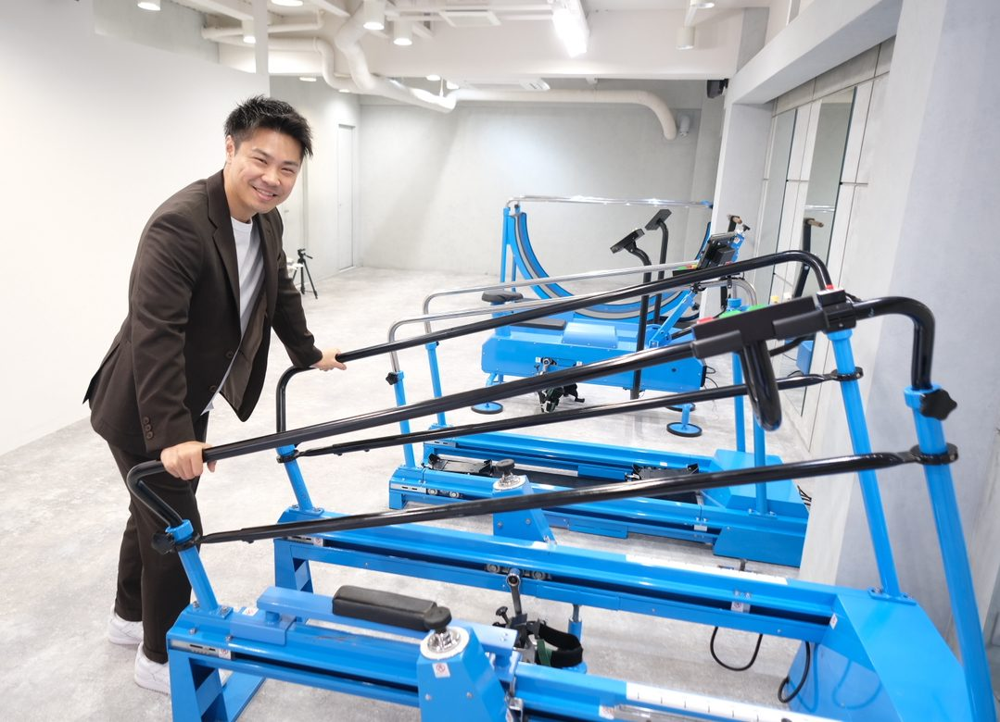

TRAINER RECRUITMENT
「姿勢が変わる、人生が変わる」を掲げるジムで、
失われかけた身体機能を取り戻す仕事です。
Revive Gym 北堀江｜トレーナー職・正社員
エントリーする大阪市西区北堀江／四ツ橋駅 徒歩3分・心斎橋駅 徒歩8分

MESSAGE
体重が何キロ落ちたか。体脂肪率が何％になったか。
トレーナーの成果は、ふつうその数字で測られます。
でも、Revive Gymでお客様が流す涙は、少し種類が違います。
手すりを持たずに、階段を降りられました。60代・女性会員さま
孫を、抱き上げられるようになりました。70代・男性会員さま
もう一度、コートに立つことができました。プロフットサル選手
「できなかったことが、できるようになる」
その瞬間の、いちばん近くに立てる仕事です。
STORY
小学2年生から大学1年まで、13年間、野球だけをやってきました。4番を打ち、春の甲子園にも出ました。プロになるつもりでいました。
19歳の秋、交通事故に遭いました。
病院で告げられたのは、「一生、車椅子の生活になるでしょう」という言葉でした。積み上げてきた13年が、その一言で終わりました。
それでも、あきらめきれなかった。自分の身体で試せることは、全部試しました。何百キロ挙げられるかではなく、「身体をどう動かすか」を変えていったとき、少しずつ足が動き始めました。
歩けるようになり、走れるようになり、ゴルフでベストスコア88を出せるまでになりました。
そのとき、確信したんです。
人間に本当に必要な筋肉は、見た目の筋肉じゃない。
Revive Gymは、その確信からつくったジムです。かつての僕と同じように「もう無理だ」と言われた人が、もう一度動き出せる場所。
いま、この場所を一緒につくってくれる人を探しています。
ここでの仕事は、たぶん、あなたが想像しているトレーナー像とは少し違います。でも、人の人生に関われる度合いでいえば、これ以上の現場はないと思っています。
一生、車椅子です。
ABOUT
Revive Gymが導入しているのは、東京大学名誉教授・小林寛道先生が科学的研究にもとづいて考案した「認知動作型トレーニングマシン」。オリンピック選手やプロアスリートにもその効果が認められている設備です。
FEATURE 01
見た目の筋肉ではなく、身体を動かす「司令系統」そのものにアプローチします。姿勢と動きの質が変わることで、日常の動作から競技パフォーマンスまでが変わります。
FEATURE 02
高重量を扱わないため、身体を痛めるリスクが構造的にありません。リハビリ中の方や術後の方にも安全に提供できる、数少ないトレーニング環境です。
FEATURE 03
障がいのある方、リハビリ層、50〜60代の健康志向層、そしてトップアスリート。同じマシンで、まったく違う目的に応えられます。
MEDIA
WORK
担当するのは、パーソナルセッションが中心です。同時に何人も見るのではなく、お客様お一人に集中して向き合える環境を意図的につくっています。
※ シフトによって前後します（要確認：実際の営業時間に合わせて修正）
VOICE
桃子トレーナー
認知動作型トレーニングは、前職の経験と違いましたか？
【たたき台／ご本人に確認のうえ差し替え】まったく違いました。「重さで負荷をかける」という発想がないので、最初は戸惑います。ただ、理論を理解してからは、お客様の身体の変化が今までより早く出るようになりました。
どんなお客様が多いですか？
【たたき台】50〜60代の方や、リハビリで来られる方が多いです。「ボディメイクのジム」を想像していると驚くと思います。でも、その分ひとつの変化がすごく大きい。歩けるようになった瞬間に立ち会えるのは、ここでしか経験できないことです。
女性が働く環境として、どうですか？
【たたき台】女性のお客様も多いので、女性トレーナーの需要はとても高いです。少人数なので、体調やプライベートの相談もしやすい環境だと思います。
PERSON
Revive Gymは、いわゆる「痩せるためのジム」ではありません。お客様の多くは、リハビリ中の方、障がいのある方、50〜60代の健康志向の方です。SNS映えするような、華やかなトレーニング現場ではありません。
成果が出るまでに時間がかかることもありますし、思うように動かない身体と向き合うお客様に、根気強く付き合う必要があります。
それでも、「もう一度できるようになった」瞬間の喜びは、他のどのジムでも味わえないものです。そこに価値を感じていただける方に、来ていただきたいと思っています。
ENVIRONMENT
FAQ
はい、問題ありません。この理論を扱えるジム自体が非常に少ないため、経験者はほとんどいません。入社後の研修で一から学んでいただきます。ただし、トレーナーとしての実務経験と資格は必須とさせていただいています。
できます。ただし、指導の考え方を一度リセットしていただく必要があります。「追い込む」「重量を上げる」という発想ではなく、「動きの質を上げる」という方向にアプローチが変わります。そこを面白いと思える方であれば、むしろ経験が活きます。
リハビリ目的の方、障がいのある方、50〜60代の健康維持を目的とされる方が中心です。加えて、プロフットサル選手やゴルファーなど、競技パフォーマンス向上を目的とされる方もいらっしゃいます。
エントリーフォームの送信後、3営業日以内にご連絡いたします。その後、面談（1〜2回を予定）と、実際のジムの見学・体験をしていただいたうえで、双方合意のもと採用を決定します。入社後のミスマッチを避けたいので、必ず現場を見てから判断していただきます。
いいえ、入社時期はご相談ください。現職の引き継ぎ等がある場合は、それに合わせて調整いたします。2027年4月入社ももちろん歓迎です。
REQUIREMENTS
| 雇用形態 | 正社員 |
|---|---|
| 職種 | トレーニングトレーナー |
| 募集人数 | 1名 |
| 応募資格 |
・トレーナーとしての実務経験をお持ちの方 ・要確認：必須資格を明記（例／NSCA-CPT・NESTA-PFT・健康運動指導士・柔道整復師・理学療法士 など） ※ 認知動作型トレーニングの経験は不問です（入社後研修あり） |
| 給与 | 月給 250,000円〜 要確認：昇給・賞与・インセンティブの有無 |
| 勤務地 | Revive Gym 北堀江 大阪市西区北堀江（四ツ橋駅 徒歩3分／西大橋駅 徒歩3分／心斎橋駅 徒歩8分） |
| 勤務時間 | シフト制／実働8時間 要確認：実際の営業時間に合わせて記載 |
| 休日・休暇 | 週休2日制（シフト制）／年間休日108日 夏季休暇・年末年始休暇・有給休暇 要確認：この条件で確定してよいか |
| 待遇・福利厚生 | 社会保険完備／交通費支給（上限要確認）／研修制度あり |
| 入社時期 | ご相談に応じます（2027年4月入社も歓迎） |
| 試用期間 | 要確認：有無と期間・条件 |
| 選考の流れ | エントリー → 書類確認 → 面談 → ジム見学・体験 → 内定 |
ENTRY
迷っている段階でのご相談も歓迎します。
「まずは見学だけ」でも構いませんので、お気軽にお送りください。